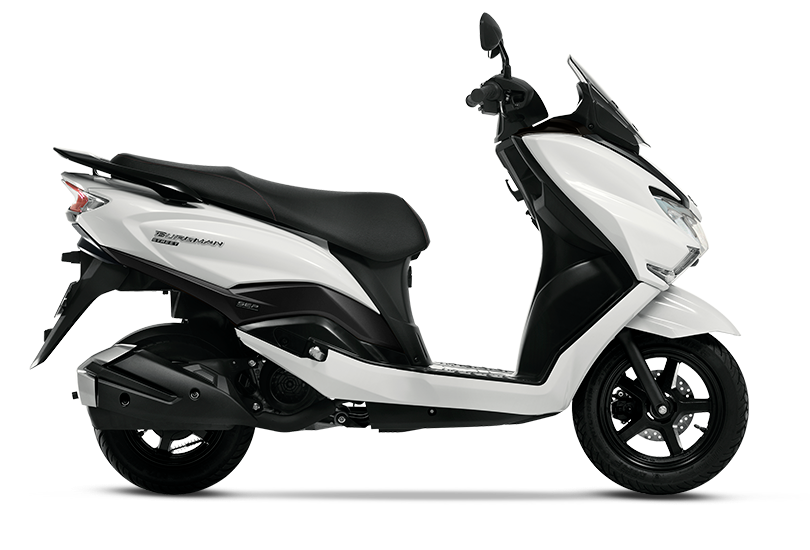

Suzuki Burgman 125 vale a pena?

Conheça a Suzuki Burgman 125
A Suzuki Burgman 125 é uma das scooters mais conhecidas do Brasil, sendo bastante popular entre quem busca praticidade, conforto e economia no dia a dia. O modelo se destaca por oferecer uma pilotagem fácil, com câmbio automático, além de um bom espaço para o piloto.
Por isso, muitas pessoas pesquisam se a Suzuki Burgman 125 vale a pena antes de comprar. A proposta da moto é clara: facilitar a mobilidade urbana com baixo custo e muito conforto.
Com design moderno e boa ergonomia, a Burgman 125 se tornou uma das scooters mais equilibradas da categoria.
Motor e desempenho
A Burgman 125 possui um motor de aproximadamente 125 cilindradas, com foco em eficiência e suavidade na pilotagem.
A velocidade máxima gira em torno de 90 a 100 km/h, sendo suficiente para uso urbano e pequenas vias rápidas.
O câmbio automático facilita muito a condução, especialmente em trânsito pesado, tornando a experiência mais confortável.
Consumo de combustível
Um dos principais pontos positivos da Suzuki Burgman 125 é o consumo. Em média, ela faz entre 35 km/l e 45 km/l.
Isso garante um custo de uso relativamente baixo, ideal para quem precisa utilizar a moto diariamente.
Preço da Suzuki Burgman 125
O preço da Suzuki Burgman 125 nova costuma ficar na faixa de R$ 13.000 a R$ 15.000, dependendo da região e da concessionária.
No mercado de usadas, é possível encontrar modelos entre R$ 7.000 e R$ 11.000, o que pode ser uma ótima opção para quem quer economizar.
Considerando o conjunto geral, o custo-benefício costuma ser bastante interessante dentro da categoria de scooters.
Conforto e praticidade
A Burgman 125 é conhecida pelo conforto. O banco é largo, a posição de pilotagem é relaxada e o espaço para os pés é bem projetado.
Além disso, o modelo conta com compartimento sob o banco, permitindo guardar capacete e outros objetos, o que aumenta muito a praticidade.
Conclusão: Suzuki Burgman 125 vale a pena?
De forma geral, a resposta é que a Suzuki Burgman 125 vale a pena para quem busca uma scooter confortável, econômica e fácil de usar no dia a dia.
Ela não é voltada para desempenho esportivo, mas entrega exatamente o que promete: praticidade e baixo custo.
Para uso urbano, é uma das opções mais equilibradas disponíveis no mercado brasileiro.